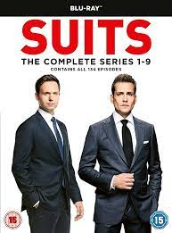

Suits
More Information
See this movie on IMDbSummary:
"Suits" is a legal drama television series that premiered in 2011. The show centers around the talented college dropout, Mike Ross, who has a photographic memory. Despite lacking a law degree, Mike lands a job at a prestigious New York law firm, Pearson Hardman, by impressing the firm's top attorney, Harvey Specter.
As Mike navigates the cutthroat world of high-stakes law, he must keep his lack of a law degree a secret, while working alongside Harvey and other skilled lawyers at the firm. Together, they handle complex cases and legal challenges, while also dealing with personal and professional struggles.
Throughout the series, "Suits" explores themes of friendship, loyalty, ambition, and the clash between legal ethics and personal integrity.
The show has received praise for its engaging storylines, sharp dialogue, and the dynamic chemistry between the lead characters, Mike Ross (played by Patrick J. Adams) and Harvey Specter (played by Gabriel Macht). "Suits" has become a fan favorite and a successful and long-running series in the legal drama genre.